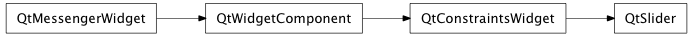

Bases: enaml.widgets.constraints_widget.ConstraintsWidget
A simple slider widget that can be used to select from a range of integral values.
The minimum value for the slider. To avoid issues where minimum is higher than maximum. The value is a positive integer capped by the maximum. If the new value of minimum make the current position invalid then the current position is set to :attr:minimum. Default value is 0.
The maximum value for the slider. Checks make sure that maximum cannot be lower than minimum. If the new value of maximum make the current position invalid then the current position is set to :attr:maximum. The max value is restricted to 65535, while the default is 100.
The position value of the Slider. The bounds are defined by :attr:minimum: and :attr:maximum:.
Defines the number of steps that the slider will move when the user presses the arrow keys. The default is 1. An upper limit may be imposed according the limits of the client widget.
Defines the number of steps that the slider will move when the user presses the page_up/page_down keys. The Default is 10. An upper limit may be imposed on this value according to the limits of the client widget.
A TickPosition enum value indicating how to display the tick marks. Note that the orientation takes precedence over the tick mark position and an incompatible tick position will be adapted according to the current orientation. The default tick position is ‘bottom’.
The interval to place between slider tick marks in units of value (as opposed to pixels). The minimum value is 0, which indicates that the choice is left up to the client.
The orientation of the slider. The default orientation is horizontal. When the orientation is flipped the tick positions (if set) also adapt to reflect the changes (e.g. the LEFT becomes TOP when the orientation becomes horizontal).
If True, the value is updated while sliding. Otherwise, it is only updated when the slider is released. Defaults to True.
Hug width is redefined as a property to be computed based on the orientation of the slider unless overridden by the user.
Hug height is redefined as a property to be computed based on the orientation of the slider unless overridden by the user.
Return a dictionary which contains all the state necessary to initialize a client widget.
A method called after initialization which allows the widget to bind any event handlers necessary.
Handle the ‘value_changed’ action from the client widget.
The content will contain the ‘value’ of the slider.
alias of __NoInterface__

Bases: enaml.qt.qt_constraints_widget.QtConstraintsWidget
A Qt implementation of an Enaml Slider.
Handle the ‘set_orientation’ action from the Enaml widget.
Handle the ‘set_single_step’ action from the Enaml widget.
Handle the ‘set_tick_interval’ action from the Enaml widget.
Handle the ‘set_tick_position’ action from the Enaml widget.